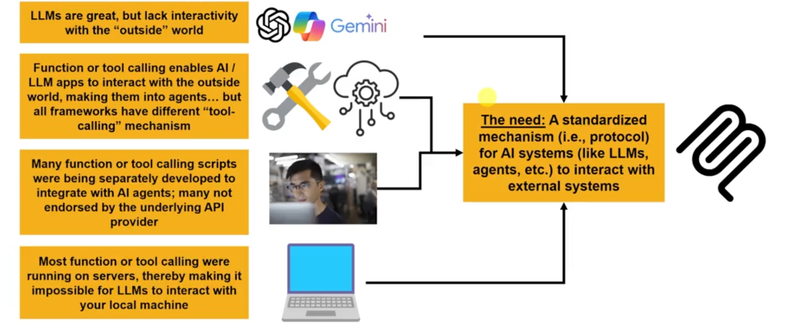
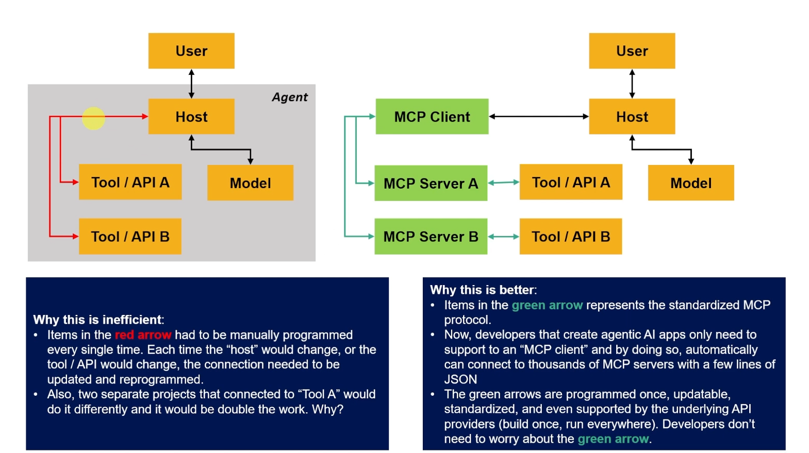
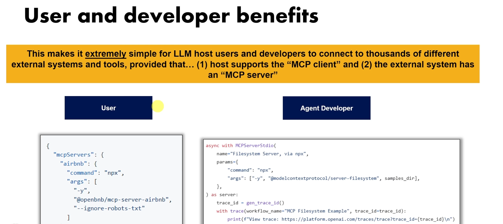
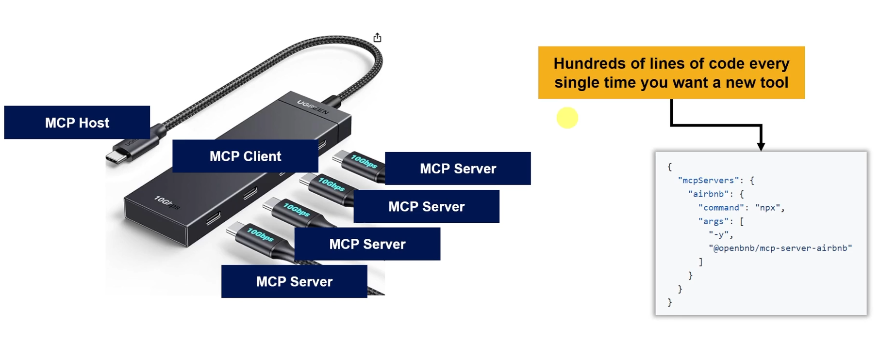

Introduction to MCP
Understand the origin, background story, and fundamental problems that the Model Context Protocol solves for agentic AI applications.
The Idea Behind MCP
Large Language Models (LLMs) are like extremely smart brains locked in empty rooms. They possess vast internal knowledge of coding, literature, and science, but they lack physical senses and hands. An LLM on its own cannot read a text file on your hard drive, run a calculation, query a live database, check weather data, or perform actions in web applications.
The Goal of Agentic AI: To turn LLMs from conversational advisors into active, goal-driven agents. This is accomplished by providing models with Tools (external calculators, APIs, terminal access) and Context (local databases, files, documentation).
The Legacy Problem: Integration Fragmentation
Before the introduction of the Model Context Protocol, connecting AI models to external systems was an integration nightmare. If a developer built a specialized search tool, they had to write custom API wrappers for LangChain, custom schemas for LlamaIndex, custom formatters for Claude Desktop, and bespoke routing code for AutoGen.
Every client framework had its own way of defining tools, formatting JSON parameters, and executing callbacks. This fragmented approach meant that developers had to rewrite integration code from scratch every time they wanted to use the same tool with a different client.

The MCP Solution: USB-C for AI Systems
The Model Context Protocol (MCP) is an open-source client-server communication protocol. Instead of custom integrations, MCP defines a single standardized specification. AI client applications (like VS Code, Claude Desktop, Cursor, or your custom Python clients) establish standardized sessions with MCP Servers. The server registers its capabilities (what tools it can run, what files it can read, and what prompt setups it provides), and the client consumes them dynamically.
🔌 Universal Connectivity
Build a database connector or weather API once as an MCP server. Any compatible client can connect and use it immediately without code adjustments.
🛡️ Secure Separation of Concerns
The AI model never runs local server processes directly. The client application acts as a secure coordinator, executing tools in isolated subprocesses and passing raw results back.
⚡ Simplified JSON-RPC Spec
Communication is powered by JSON-RPC 2.0 messages, making it easy to build clients and servers in multiple programming languages (Python, TypeScript/JavaScript, Rust, Go).
History of Agentic AI Development & MCP
To appreciate why MCP is a breakthrough, it helps to look at the history of how developers have connected language models to external data.

AI context was restricted to simple copy-pasting. Developers had to manually insert files or database dumps directly into the prompt box, which quickly consumed context window limits.
Developers began prompting models using reasoning loops (Reasoning + Acting). The model would output a text string like Action: SearchDatabase[query], which a custom wrapper script parsed, executed, and fed back into the next prompt.
LLM providers (such as OpenAI and Anthropic) introduced native function calling. Models were fine-tuned to return structured JSON payloads rather than raw text blocks. While this improved reliability, developers still had to write custom client-side code for each API.
To resolve this fragmentation, Anthropic released the Model Context Protocol as a universal open standard. MCP unifies tool execution, file reading, and prompt templates, allowing developers to create highly reusable AI integrations.
Understanding the Fragmentation Shift
In legacy systems, every AI application needed custom drivers for every database, service, or API. This created a complex web of proprietary code, as shown below:

With MCP, this complex web is simplified. The AI client relies on a single protocol to connect to any number of local or remote MCP servers. The servers handle the database queries and API calls, and format the results into standard JSON-RPC packets for the client.

Why the MCP Ecosystem Matters
By adopting the Model Context Protocol standard, developers and enterprises gain several key advantages:
- Reusability: If you write an MCP server to query a PostgreSQL database, you can plug that exact server into Claude Desktop, VS Code, a custom Python script, or an enterprise Slackbot. You write the integration once, and it works everywhere.
- Maintainability: Server code is decoupled from client applications. If an external API updates, you only need to modify the code inside your MCP server. The client applications will adapt to the changes automatically.
- Security and Sandboxing: Since the MCP client coordinates tool execution, it can prompt users for permission before running critical commands (like writing files, sending emails, or executing terminal commands). The AI model remains in a secure, sandboxed environment.
- Language Agnostic: Any client can communicate with any server as long as they speak the JSON-RPC protocol over standard stdio pipes or SSE HTTP streams.